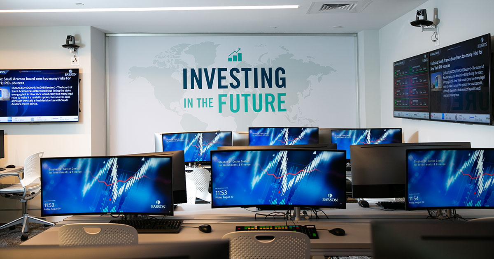

SPEAR Investment Banking
The Program
SPEAR meets weekly on Fridays. Members study investment banking and prepare for recruiting with guidance from facilitators and alumni.
- 13
- weekly sessions
- 14
- members per cohort

01 / THE PROGRAM
Curriculum
SPEAR meets weekly on Fridays. Facilitators lead interactive sessions on the investment banking industry, accounting, valuation, and financial modeling. Students work through practical exercises and assignments that develop their understanding of the material.
The curriculum also covers recruiting, with time devoted to resumes, networking, and behavioral and technical interviews.

02 / THE PROGRAM
Learning from members and alumni
Members have opportunities to learn from one another and build relationships with SPEAR alumni. Each student is assigned a mentor who has completed an investment banking internship or currently works in the industry.
Facilitators and other members are available for individual guidance, resume reviews, and additional mock interviews. These relationships give students access to firsthand perspectives on recruiting and working in banking.

03 / THE PROGRAM
M&A capstone
Each member prepares an individual sell-side M&A pitch for a real company. The project includes an operating model and valuation work using discounted cash flow analysis, comparable companies, and precedent transactions.
Members present their work to current and former SPEAR participants, including alumni working in investment banking.
04 / THE PROGRAM
Commitment and expectations
The program runs for 13 sessions and carries a workload comparable to a full academic course. Assignments, quizzes, and check-ins with facilitators help members assess their understanding and track their progress.
Members are expected to prepare consistently and act on feedback. SPEAR provides substantial support, and students are responsible for making use of it.